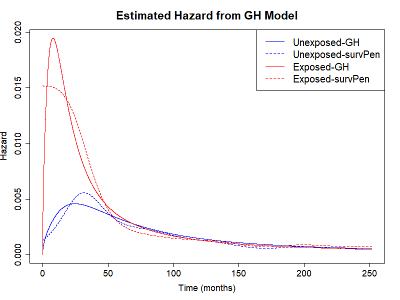
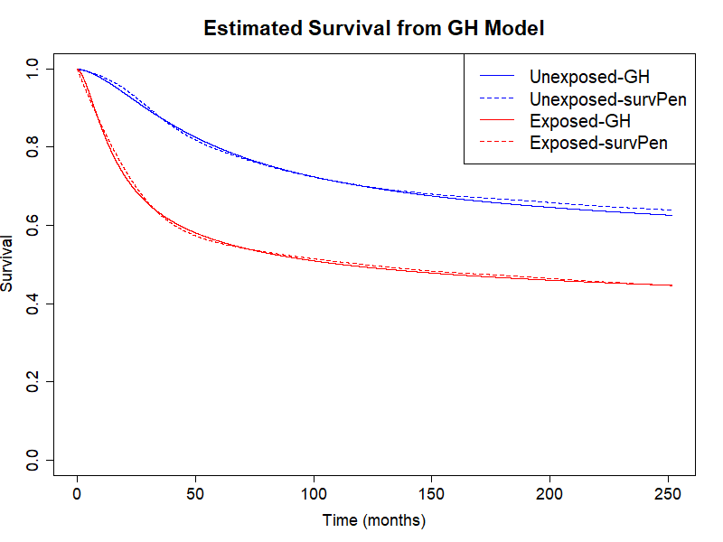
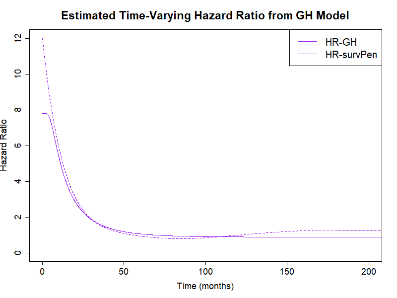
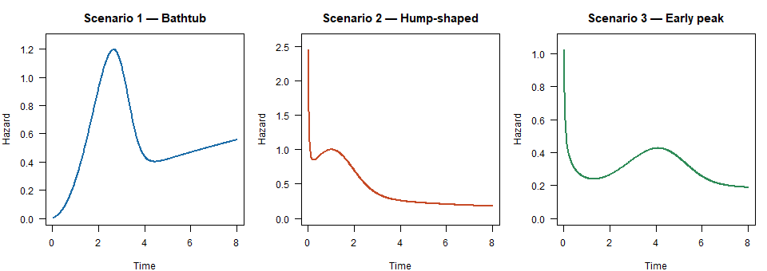

Penalised Flexible-Parametric Generalized Hazard Models for Survival Analysis
In survival analysis, quantifying covariate effects typically relies on one of two complementary frameworks. The Cox proportional hazards (PH) model acts multiplicatively on the instantaneous hazard — h(t|x) = h₀(t)·exp(β′x) — and requires the covariate effect to remain constant over time, an assumption that is often difficult to justify in practice. Accelerated failure time (AFT) models instead model covariate effects on the time scale, describing survival as an accelerated or decelerated version of a baseline — h(t|x) = h₀(t·exp(β′x))·exp(β′x). The lesser-known accelerated hazards (AH) models describe a pure time-acceleration with no accompanying hazard-scale change: h(t|x) = h₀(t·exp(β′x)).
There is no fundamental reason why a covariate effect should be restricted to only one of these scales. Generalized hazards (GH) models (also “extended hazards”) combine both mechanisms:
This nests PH (β₁ = 0), AFT (β₂ = 0), and AH (β₁ = −β₂) as special cases. A key property: combining the time-constant acceleration parameter β₁ and the time-constant hazard-scaling parameter β₂ may allow the GH model to capture time-varying hazard ratios with only two parameters per covariate.
Despite these attractive properties, no flexible parametric implementation of GH models with regularisation to avoid overfitting previously existed. genhaz fills this gap: it fits penalised cubic restricted spline GH models with a log-time baseline, where the smoothing parameter is selected automatically by minimising a modified likelihood cross-validation (LCV) criterion. Simulation studies showed that the log-time spline formulation is critical for accurately capturing rapidly varying early hazards.
Link to paper here once published.
Installation
# From source (inside the package directory):
devtools::install(".")
# Or build and install the tarball:
devtools::build()
install.packages("genhaz_0.1.0.tar.gz", repos = NULL, type = "source")Required system tools: a C++ compiler and the Rtools toolchain (Windows) or Xcode command-line tools (macOS).
Dependencies
| Package | Role |
|---|---|
Rcpp / RcppArmadillo
|
C++ spline implementation |
survival |
Surv objects |
Optional: survPen (for lambda_surv = TRUE or comparison plots), rstpm2 (for translate_time()), biostat3 (melanoma example below).
Quick start
library(genhaz)
library(survival)
set.seed(42)
dat <- sim_scenario(scenario = 1, beta1 = 0.5, beta2 = 0.5, n = 2000)
# Fit a GH model with automatic smoothing (LCV)
fit <- fit_genhaz(
surv = Surv(dat$time, dat$event),
formula = ~ X,
data = dat,
model_type = "GH",
profile = TRUE, # optimise lambda via LCV
n_knots = 8,
tol_LCV = 0.01
)
fit$par
fit$se
# Hazard and survival curves with 95 % confidence bands
t_grid <- seq(0.01, 8, length.out = 300)
nd <- data.frame(X = c(0, 1))
rownames(nd) <- c("X = 0", "X = 1")
plot(fit, newdata = nd, times = t_grid, type = "hazard",
interval = "confidence", col = c("steelblue", "firebrick"))
plot(fit, newdata = nd, times = t_grid, type = "survival",
interval = "confidence", col = c("steelblue", "firebrick"))S3 methods for fitted models
All objects returned by fit_genhaz() have class "genhaz_fit" and come with standard R generics.
Inspect the fit
print(fit) # model type, lambda, EDF, AIC, coefficient table with Wald CIs
summary(fit) # as above plus exponentiated estimates exp(beta1), exp(beta2)Predict hazard, survival, cumulative hazard, or RMST over a time grid — one row of newdata per covariate pattern, row names become group labels:
nd <- data.frame(X = c(1, 0)) # row 1 = exposed (group 1), row 2 = baseline (group 0)
rownames(nd) <- c("Exposed", "Unexposed")
pred <- predict(fit, newdata = nd, times = t_grid, type = "survival",
interval = "confidence")
# type = "hazard" | "survival" | "cumhaz" | "rmst"
# | "surv_diff" | "rmst_diff" | "hazard_ratio" | "time_ratio" | "acc_factor"
# returns a data.frame: pattern | time | estimate | lower | upperFollowing stats::predict.lm, interval = "none" (the default) returns only the point estimate (lower/upper are NA); pass interval = "confidence" for a delta-method Wald CI, with level setting the confidence level (default 0.95).
The five two-group types require exactly two rows in newdata: row 1 is the exposed group (group 1) and row 2 the unexposed/baseline group (group 0). Results are labelled "group1 - group0"; request CIs with interval = "confidence":
tau_grid <- c(2, 4, 6, 8)
predict(fit, newdata = nd, times = t_grid, type = "surv_diff") # S1(t) - S0(t)
predict(fit, newdata = nd, times = tau_grid, type = "rmst_diff") # RMST1 - RMST0
predict(fit, newdata = nd, times = t_grid, type = "hazard_ratio") # h1(t) / h0(t)
predict(fit, newdata = nd, times = t_grid, type = "time_ratio") # tau/t: S0(tau)=S1(t)
predict(fit, newdata = nd, times = t_grid, type = "acc_factor") # f(t)=log tau'(t): S(t|x)=S0(int exp(f*X))acc_factor is work in progress
Plot with automatic colours; add interval = "confidence" for delta-method confidence bands:
plot(fit, newdata = nd, times = t_grid) # hazard (default), no bands
plot(fit, newdata = nd, times = t_grid, type = "survival", interval = "confidence")
plot(fit, newdata = nd, times = t_grid, col = c("steelblue", "firebrick"))Model types
The model_type argument selects the sub-model for each covariate:
model_type |
Constraint | Interpretation |
|---|---|---|
"GH" |
none | Full general hazard |
"PH" |
β₁ = 0 | Proportional hazards |
"AFT" |
β₂ = 0 | Accelerated failure time |
"AH" |
β₁ = −β₂ | Additive hazards |
Mixed models are supported via a vector, e.g. model_type = c("PH", "GH") for two covariates.
Censoring types
Surv call |
Censoring | Internal type |
|---|---|---|
Surv(time, event) |
Right-censoring | "rc" |
Surv(start, stop, event) |
Left-truncation + right-censoring | "lt_rc" |
Surv(t1, t2, type="interval2") |
Interval censoring | "ic" |
Note: only the right-censoring type has been properly tested so far.
Real-data example: melanoma survival
We use the biostat3::melanoma dataset, a synthetic dataset mimicking melanoma cancer patient survival for a Nordic population. It contains 3,680 female and 4,095 male patients together with age, year of diagnosis, stage of cancer progression (localised, regional, distant, unknown), observed survival time in months, and an end-of-follow-up status indicator.
The question of interest is the effect of non-localised cancer stage at diagnosis on survival. Age (grouped as 0–44, 45–59, 60–74, 75+), period of diagnosis (1975–84 vs 1985–94), and sex are treated as confounders.
Model
The GH model for this application is
h(t | age, period, sex, stage) =
h₀( t · exp(β₁_stage · 1[stage≠loc] + β₁_con' X) )
· exp( (β₁_stage + β₂_stage) · 1[stage≠loc] + (β₁_con + β₂_con)' X )where X = (1[period=1985–94], 1[age∈45–59], 1[age∈60–74], 1[age≥75], 1[sex=male])’.
Data preparation and fitting
library(genhaz)
library(survival)
library(biostat3)
set.seed(23234)
mel <- biostat3::melanoma
mel$X <- ifelse(mel$stage == "Localised", 0, 1)
mel$event <- ifelse(mel$status == "Dead: cancer", 1, 0)
mel$time <- mel$surv_mm
mel$period <- ifelse(mel$year8594 == "Diagnosed 75-84", 0, 1)
fit_adj <- fit_genhaz(
Surv(mel$time, mel$event), ~ X + period + agegrp + sex,
data = mel,
model_type = "GH",
profile = TRUE,
n_knots = 8,
tol_LCV = 0.001,
timeIt = TRUE,
lcv_method = "optimize"
)
fit_adj$par
fit_adj$seResults
Delta-method confidence intervals via predict(). Results evaluated at age group 60–74, male sex, diagnosed 1985–94. Plots below also overlay estimates from survPen (dashed lines) for comparison.
nd_mel <- data.frame(
X = c(0L, 1L),
period = c(1L, 1L),
agegrp = factor(c("60-74", "60-74"), levels = levels(mel$agegrp)),
sex = factor(c("Male", "Male"), levels = levels(mel$sex))
)
rownames(nd_mel) <- c("Localised", "Non-localised")
new.time <- seq(0.5, max(mel$time), by = 0.5)Estimated hazard curves

Since the GH model imposes a common baseline hazard shape starting at 0, there is a slight misspecification at early times; this is negligible when considering the overall survival curves (see below).
The estimates for the stage effect are β̂₁ = 1.14 (95% CI: 0.97, 1.31) and β̂₂ = 0.31 (95% CI: 0.17, 0.44). Patients with non-localised disease progress through the baseline hazard exp(1.14) = 3.14 times faster and experience a exp(0.31) = 1.36 times higher hazard at every time point.
Estimated survival curves
plot(fit_adj, newdata = nd_mel, times = new.time, type = "survival",
interval = "confidence", col = c("steelblue", "firebrick"),
xlab = "Time (months)", main = "Estimated survival — melanoma, GH model")
Time-varying hazard ratio
hr_mel <- predict(fit_adj, newdata = nd_mel,
times = seq(0.5, 200, by = 0.5), type = "hazard_ratio",
interval = "confidence")
plot(hr_mel, col = "purple",
xlab = "Time (months)",
main = "Time-varying HR — non-localised vs localised")
abline(h = 1, lty = 2, col = "grey50")
With only two parameters (β₁, β₂) for the stage effect, the GH model captures most of the time-variation in the hazard ratio recovered by survPen fully flexibly. Both models agree that the hazard ratio starts high and levels off after approximately 6 years.
Simulation scenarios
genhaz ships three mixture Weibull baseline scenarios with qualitatively different hazard shapes for benchmarking.
Each true baseline hazard follows a two-component Weibull mixture:
| Scenario | Baseline shape | Parameters |
|---|---|---|
| 1 | Bathtub | p = 0.8, λ₁ = λ₂ = 0.1, γ₁ = 3, γ₂ = 1.6 |
| 2 | Hump-shaped | p = 0.5, λ₁ = λ₂ = 1, γ₁ = 1.5, γ₂ = 0.5 |
| 3 | Early peak | p = 0.26, λ₁ = 0.02, λ₂ = 0.5, γ₁ = 3, γ₂ = 0.7 |

The covariate effect enters as a generalised hazard: h(t|X) = h₀(t · exp(β₁X)) · exp((β₁ + β₂)X).
# Simulate from scenario 1 (bathtub baseline)
dat1 <- sim_scenario(1, beta1 = 0.5, beta2 = 0.5, n = 1000)
# Evaluate the true hazard on a grid
t_grid <- seq(0.01, 8, length.out = 300)
h_true <- mixWeibSc(1, "h", t_grid, X = 0, beta1 = 0.5, beta2 = 0.5)Smoothing-parameter selection
The smoothing parameter λ is chosen by minimising the modified LCV criterion. Three optimisation strategies are available via the lcv_method argument:
lcv_method |
Method | Notes |
|---|---|---|
"full" (default) |
Root-find on full LCV gradient (including third-derivative of log-likelihood) | Accurate |
"approx" |
Root-find on approximate LCV gradient (ignoring third-derivative of log-likelihood) | Faster |
"optimize" |
Direct optimize() on LCV, no gradient |
Gradient-free |
# Faster first-order gradient
fit <- fit_genhaz(..., profile = TRUE, lcv_method = "approx")
# Pure optimisation (no gradient)
fit <- fit_genhaz(..., profile = TRUE, lcv_method = "optimize")Key functions
| Function | Description |
|---|---|
fit_genhaz() |
Fit a GH model (high-level interface) |
print(fit) |
Concise model overview with Wald CIs |
summary(fit) |
Full coefficient table with exponentiated estimates |
predict(fit, newdata, times) |
Hazard, survival, cumhaz, RMST, and two-group comparisons (differences, hazard ratio, time ratio); interval = "confidence" adds delta-method CIs at level; returns a "genhaz_pred" object |
plot(pred) |
Plot a predict() result — auto ylim, labels, legend, CI bands |
plot(fit, newdata, times) |
Convenience wrapper: calls predict() then plot() (interval = "confidence" for bands) |
post() |
Evaluate h, H, S and gradients at new (time, X) |
CI() |
Pointwise confidence bands for h, H, S |
confint(fit) |
Wald CIs for parameters (diff = TRUE for ) |
anova(fit1, fit2) |
Likelihood ratio tests between nested models |
knot_pattern() |
Place spline knots from event-time quantiles |
sim_scenario() |
Simulate data from a named scenario |
mixWeibSc() |
True h / H / S for a named scenario |
genhaz_work() |
Low-level workhorse (advanced use) |
Checking the package
devtools::document() # regenerate NAMESPACE and man/ pages
devtools::check() # run R CMD check
devtools::test() # run testthat suiteKnown issues / R CMD check notes
-
getFromNamespace("vintegrate", "rstpm2")in thegaussified = FALSEcode path triggers an R CMD check NOTE. This path is not the default; the Gauss-Legendre path (gaussified = TRUE) is recommended. -
translate_time()andtranslate_time2()require rstpm2 (>= 1.5).